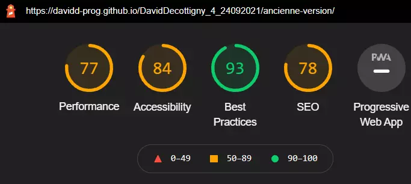
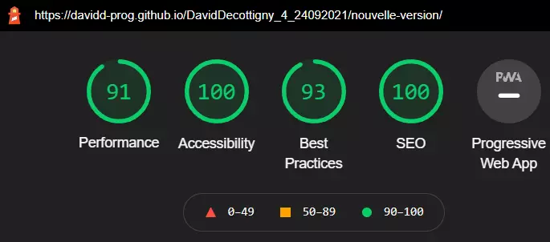

Explorez les deux versions du site de La chouette agence
Optimisation du site de La chouette agence en terme de performance, accessibilité, bonnes pratiques usuelles et SEO
Résultats pré et post-modifications :
Score et lien vers la page principale du site d'origine :
Score et lien vers la page principale du site optimisé:
